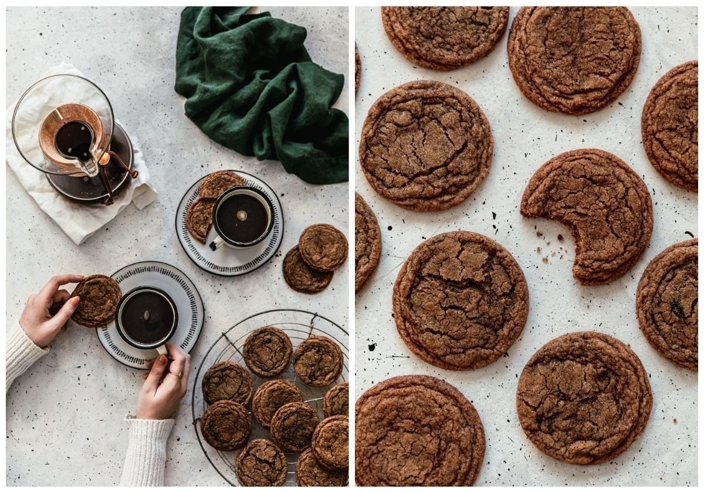

Fig.1 The perfect compliment for a nice cup of coffee or as an afternoon snack to boost energy! Image from Sunday Table
Directions
Whisk together dry ingredients.
Cream together the butter, brown sugar and white sugar.
Add egg, vanilla and instant coffee.
Roll dough into balls and bake cookies for 7 minutes at 350°F.
Ingredients
2 and 1/4 cups All-Purpose Flour
1/2 teaspoons Baking Powder
1/2 teaspoons Salt
1 teaspoon Cinnamon
1 teaspoon Cardamom
1 c Unsalted Butter, softened
3/4 c Brown Sugar
3/4 c White Sugar, divided
1 Egg
1 teaspoon Vanilla Extract
2 tablespoons Instant Coffee
Please check out the source of the recipe and image below!